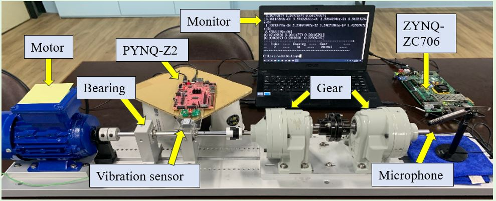
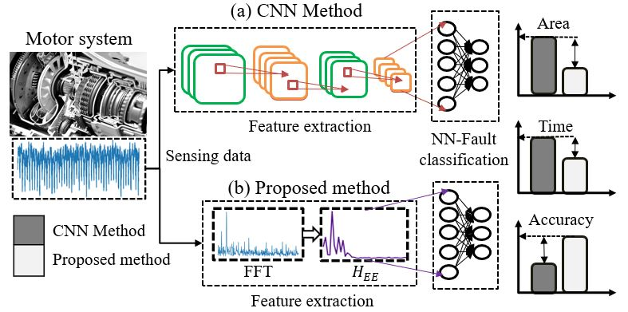
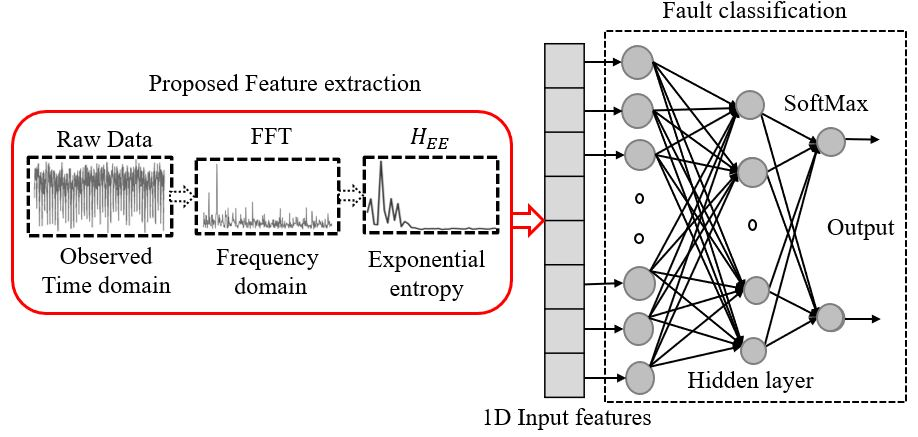
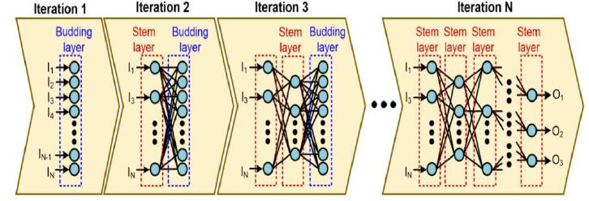
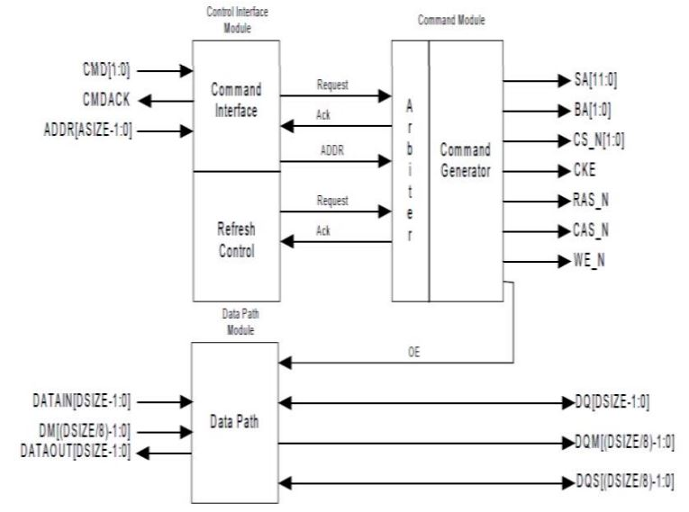

National Sun Yat Sen University, Taiwan [ Ph.D (Ongoing, Expected 2024, Aug)]
Machine Learning and Transfer learning
Machine Learning and Transfer learning
VLSI Design and Embedded Systems
Electronics and Communication Engineering
Physics, Chemistry, Mathmatics, and Statistics
Project :
DDR SDRAM Memory controller verification using Systemverilog
Work Responsibility :
Checking the clients Printed Circuit board Manufactuirng capability.
Technical issues escalation to the design team
Handling the United states clients related to the PCB specs and fabrication.
Work Responsibility :
The TA responsibilities will be to grade student programs by running scripts, and to assist in exam grading.
Work Responsibility :
The TA responsibilities will be to grade student programs by running scripts, and to assist in exam grading.

Rotating machinery is a machine with a rotating component to do the energy transformation, which is widely used in vehicle engines, power plants, manufacturing factories, etc. ...

Rotating machinery is used in a variety of industries including petroleum, automotive and food processing, etc. which uses bearings to reduce the friction between the moving parts. ...

Rotating machinery is widely employed in various industries, including petroleum, automotive, food processing, etc. Bearings are commonly utilized in rotating machinery to alleviate friction and stress while performing rotational or linear movement of various subcomponents. ...

Industry 4.0 is the current development trend in manufacturing technology. For prognostic and health management (PHM) systems, a major task is to predict the remaining useful life (RUL) of a machine. ...

In present electronic systems, DDR SDRAM (Double Data Rate Synchronous Dynamic Random-AccessMemory) is an next level advanced version of regular SDRAM, and it was developed with advanced key features such as effective use of memory bandwidth and its capability to transact data on both edges of clock cycles. ...